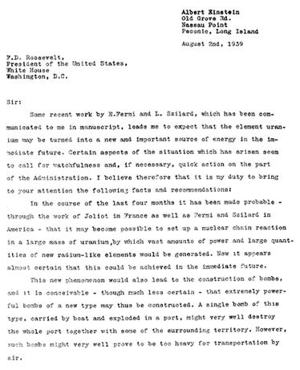
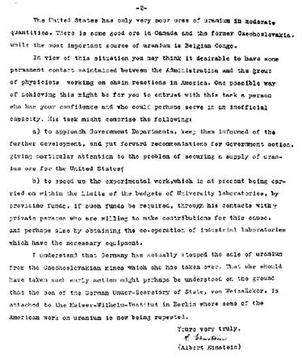

Cuối tháng 7 năm 1939, hai vật lí gia Hung Gia Lợi Leo Szilard và Eugene Wigner, giáo sư ở Princeton, vẻ mặt lo lắng, lại kiếm Einstein lúc đó đương nghỉ mát ở Long Island, tỏ ý ngại rằng Đức Quốc Xã đương nghiên cứu chế tạo bom nguyên tử, nếu họ thành công thì chẳng những châu Âu mà khắp thế giới sẽ bị nằm dưới gót sắt của họ nếu không bị tiêu diệt.
Szilard bảo ông:
- Ông chịu viết thư cho tổng thống, thúc tổng thống lập một chương trình chế tạo bom nguyên tử không?
Einstein thấy đề nghị đó táo bạo quá, ngồi im lặng một lát. Mới mấy năm trước đây, hô hào các nhà bác học trên thế giới đừng chế tạo vũ khí tối tân để nhân loại giết nhau nữa, bây giờ làm sao có thể chấp nhận một đề nghị như vậy được, đâu có thể tiếp tay vào việc tàn sát nhân loại được. Nhưng rồi ông nghĩ lại: Hitler tất nhiên không thể có một chút lương tâm gì cả, và nếu Đức chế tạo được bom nguyên tử trước Hoa Kì thì mới làm sao? Ông đáp:
- Tôi chưa hề gặp Tổng thống, giá có viết thư thì cũng chẳng ích gì…
Wigner mỉm cười, bảo:
- Tổng thống quí ông lắm, chỉ một mình ông là có thể làm cho Tổng thổng lưu tâm tới vấn đề đó được thôi.
Ông nói:
- Tôi không khi nào tán thành cai ý dùng bom đó, trừ trường hợp bất khả kháng. Nhưng nếu Hoa Kì có được thứ bom đó mà làm cho Hitler phải suy nghĩ lại thì tôi sẽ gởi thư lên Tổng thống.
Einstein bèn đọc bằng tiếng Đức đại ý nội dung một bức thư cho một người giúp việc tên là Teller chép. Rồi Szilard theo những ý đó mà viết thành hai bức, một dài một ngắn, để Einstein lựa. Ông lựa bức dài rồi kí, chẳng thêm bớt gì cả. Bức thư đó như sau:
Albert Einstein
Old Grove Road
Nassau Point
Peconic, Long Island
Ngày 2-8-1939
F.D. Roosewelt
Tổng thống Hoa Kì
Bạch Ốc
Washington D.C
Thưa Tổng thống,
Tôi đã được đọc bản thảo các công việc nghiên cứu mới đây của E. Fermi và L. Szilard và tôi tin rằng chất uranium có thể một ngày gần đây biến đổi thành một nguồn năng lực mới rất quan trọng. Theo tôi có vài khía cạnh của tình trạng đáng cho chính quyền chú ý tới và nếu cần, phải hành động mau nữa. Vì vậy tôi tự xét có bổn phận trình lên Tổng thống thấy những sự kiện và những lời dặn dò dưới đây:
Do những công việc của Joliot ở Pháp, của Fermi và Szilard ở Hoa Kì bốn tháng gần đây, người ta thấy rằng có thể gây nên những phản ứng hạch tâm dây chuyền trong một khối uranium, những phản ứng đó có thể phát sinh được một sức mạnh vĩ đại và rất nhiều chất phóng xạ. Hiện nay gần như chắc chắn rằng sắp có thể đạt được kết quả đó.
Hiện tượng mới đó cũng làm cho người ta chế tạo được bom, và có thể chứ chưa thật chắc chắn rằng những thứ bom mới này cực kì mạnh, tới nỗi chỉ một trái thôi chở trên một chiếc tàu, để nổ trong một hải cảng thì trọn hải cảng và một phần miền chung quanh sẽ tan tành. Nhưng có thể rằng những bom đó nặng quá không thể chở bằng máy bay được.
Hoa Kì chỉ có ít quặng uranium mà quặng đó lại rất xấu. Ở Gia Nã Đại, ở cựu[25] Tchécoslovaquie có quặng tốt, nhưng những mỏ uranium lớn nhất thì ở Congo thuộc Bỉ.
Xét tình trạng như vậy, Tổng thống có thể thấy rằng chính quyền nên tiếp xúc thường xuyên với các nhóm vật lí gia ở Mĩ đương nghiên cứu các phản ứng dây chuyền. Có một cách là giao công việc đó cho một người được Tổng thống tin cậy và người đó sẽ tiếp xúc với các vật lí gia một cách không chính thức. Nhiệm vụ của người đó có thể là:
a/ Tiếp xúc với các cơ quan chính quyền, cho các cơ quan đó hay mọi sự phát triển sẽ thực hiện được, đề nghị với chính quyền những biện pháp cần thiết, và đặc biệt chú ý tới việc mua và dự trữ đều đều quặng uranium.
b/ Làm gấp công việc nghiên cứu hiện nay giao cho các phòng thí nghiệm tại các đại học mà ngân sách rất eo hẹp, phải tăng ngân sách cho họ; tiếp xúc với các tư nhân muốn trợ lực vào công việc đó, hoặc yêu cầu các phòng thí nghiệm kĩ nghệ hợp tác, nếu họ có đủ dụng cụ cần thiết.
Tôi tin rằng Đức đã cấm bán uranium đào được ở các mỏ Tchécoslovaquie mà họ đã chiếm được. Nếu chúng ta nhớ rằng viên thứ trưởng bộ ngoại giao Đức được biệt phái qua viện Kaiser Wilhelin ở Berlin, mà tại viện đó, người ta tiếp tục một phần công việc nghiên cứu về uranium, thì chúng ta hiểu được tại sao họ vội cấm bán uranium như vậy.
Kính chúc Tổng Thống.


Bức thư Einstein gởi cho Tổng thống Roosewelt
[25] Cựu, vì lúc đó Tchécoslovaquie đã bị Đức chiếm.